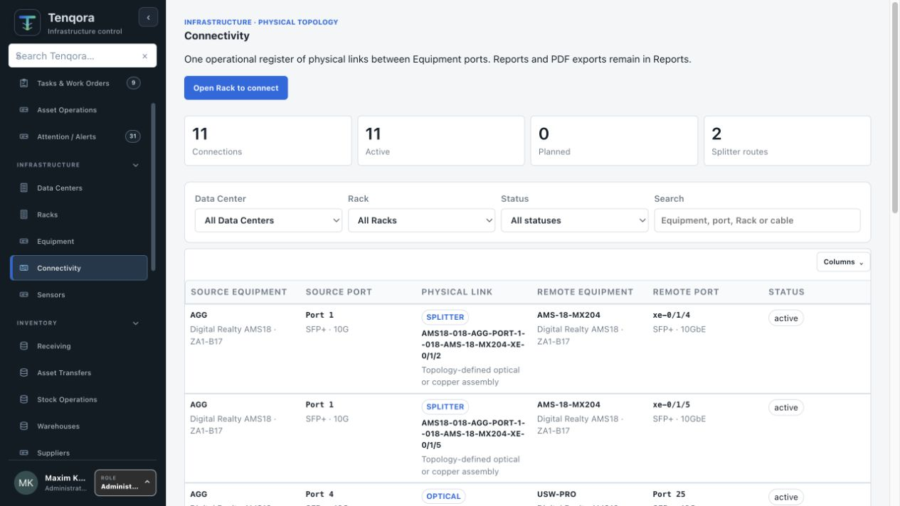

Port 1SFP+ · 10GbE · Front
SFP+Generic SFP-10G-LR
TR
Model exact Ports, compatible media, Splitters, breakouts, Patch Panels, labels and every intermediate physical dependency.

Interactive connection model
This illustrative demo uses the same connection vocabulary as Tenqora. Choose a method to see how endpoints, intermediate components and compatibility context change.
One validated source TX feeds two receiver branches through a passive 1×2 Splitter.
Illustrative topology · compatibility remains configuration-specificCompatibility engine
Fiber mode, application, wavelength, connector, polish, loss and transceiver identity remain explicit.
Named input and output Ports, branch identity and validated TX-to-RX behavior are retained.
DAC and AOC are one serialized two-ended cable, never two independent transceivers.
Copper and optical panels preserve front/back Port identity and compatible media.
Serial, KVM, InfiniBand and Fibre Channel stay within their physical and protocol rules.
Connected-only or complete reports, labels and exact route evidence are ready for field work.
One path record
Connectivity you can trust